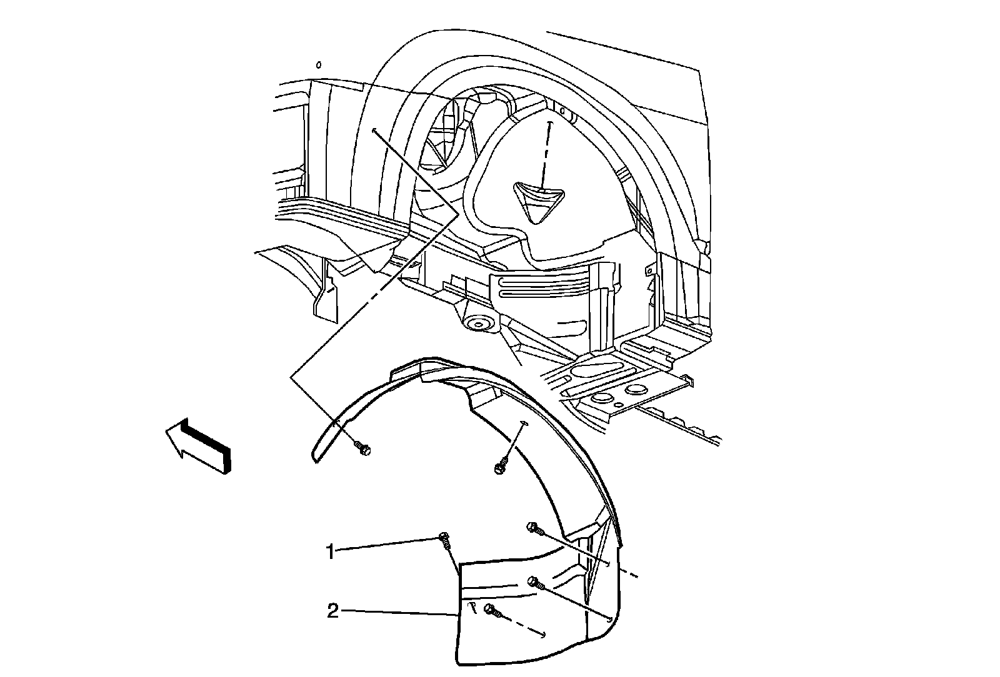
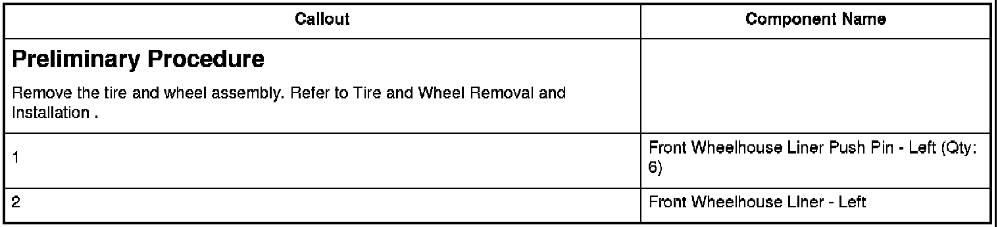

Operation CHARM
: Car repair manuals for everyone.
Home
>>
Cadillac
>>
2008
>>
SRX AWD V8-4.6L
>>
Repair and Diagnosis
>>
Body and Frame
>>
Fender
>>
Front Fender
>>
Front Fender Liner
>>
Service and Repair
>>
Wheelhouse Panel Replacement - Left Side
Wheelhouse Panel Replacement - Left Side
Wheelhouse Panel Replacement - Left Side


Preliminary Procedure